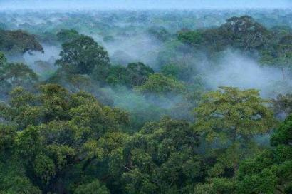

Pohon
Batang dan dahan yang kokoh nan kuat menjadi tempat sandaran makhluk dari dalam mengistirahatkan dirinya setelah melewati perjuangan panjang dalam siklus kehidupan.
Belajar dari filosofi bagian tubuh pada sebuah pohon, sudah selayaknya sebagai seorang insan berakal untuk pandai mempelajari dan mencari hikmah atas penciptaan diri kita dalam kehidupan.
